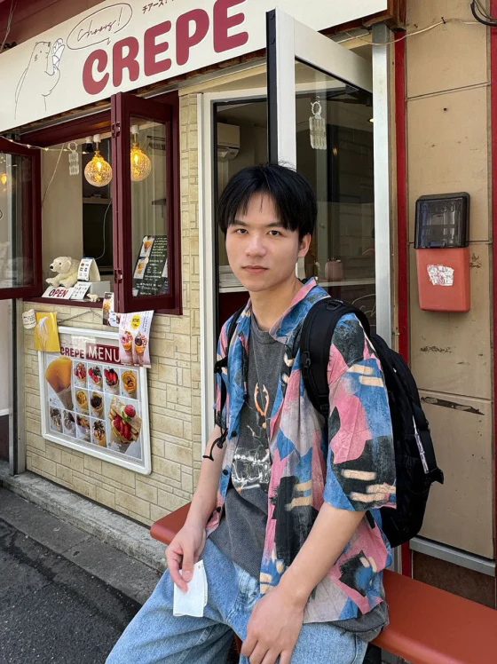

Jiaxuan Li
李嘉烜I am a Research Scientist at SB Intuitions Corp., where I work on large language models and vision-language models.
My research interests include multimodal reasoning, hallucination mitigation, knowledge grounding, and trustworthy AI.
I received my Ph.D. in Information Science and Technology from the University of Tokyo in 2025 under the supervision of Prof. Hideki Nakayama at the Nakayama Laboratory. Previously, I earned my M.Eng. from Shanghai Jiao Tong University under the supervision of Prof. Yuye Ling, and my B.Eng. from Shanghai University under the supervision of Prof. Zhi Liu.
I am open to research collaborations on multimodal and trustworthy AI. Please feel free to get in touch.

News
- Our paper “Do VLMs Share Safety Neurons Across Modalities?” was accepted to EMNLP 2026 (Main).
- Joined SB Intuitions as a Research Scientist, focusing on responsible AI.
- Received my Ph.D. in Information Science and Technology from the University of Tokyo.
Earlier updates
- Selected as a DAAD AInet Fellow by the German Academic Exchange Service (DAAD).
- Gave an invited talk on EVCap at MIRU 2024 in Kumamoto.
- Received a Google Student Travel Grant for East Asia.
- Selected to attend the International Computer Vision Summer School (ICVSS 2024) in Sicily, Italy.
- One paper was accepted to CVPR 2024.
- One paper was accepted to ICCV 2023.
- Selected as a Japan Society for the Promotion of Science (JSPS) Research Fellow (DC2).
- Selected for the SPRING GX Fellowship, supported by the Japan Science and Technology Agency (JST).
Selected Publications
Explore the full list or Google Scholar
* Equal contribution


Research Grants
- Japan Society for the Promotion of Science (JSPS), Grant-in-Aid for JSPS Fellows, JPY 2M, Apr 2023–Mar 2025
- National Institute of Informatics (NII), NII Open Collaborative Research (Researcher), JPY 1.2M, Jul 2024–Mar 2025
- National Institute of Informatics (NII), NII Open Collaborative Research (Researcher), JPY 1M, Jul 2023–Mar 2024
- Japan Science and Technology Agency (JST), SPRING GX Fellowship, JPY 620K, Apr 2022–Mar 2023
Awards and Honors
- AInet Fellow, German Academic Exchange Service (DAAD), 2024
- Final-Year Special Allowance for JSPS Research Fellows, Japan Society for the Promotion of Science, 2024
- Google Student Travel Grant for East Asia, Google, 2024
- Special Committee Award, the 30th Annual Meeting of the Association for Natural Language Processing, 2024
- JSPS DC2 Research Fellowship for Young Scientists, Japan Society for the Promotion of Science, 2023
- SPRING GX Fellowship, Japan Science and Technology Agency, 2022
- Outstanding Graduate, Shanghai Jiao Tong University, 2022
- COSCO Shipping Scholarship, Shanghai Jiao Tong University, 2021
- Second Prize, “Huawei Cup” 17th China Post-Graduate Mathematical Contest in Modeling, 2020
- Academic Scholarship, Shanghai University, 2016
Academic Activities
- Reviewer at IEEE TIP, NeurIPS, ICLR, CVPR, ECCV, ACL ARR, AAAI, WACV, BMVC, ACCV
- Invited Talk, Knowledge and Information Research Team, AIST, Japan, Feb 2025
- Invited Talk, MIRU, Kumamoto, Japan, Aug 2024
- Poster Presentation, International Research Center for Neurointelligence (IRCN), The University of Tokyo, Japan, Jul 2024
- Invited Talk, Knowledge and Information Research Team, AIST, Japan, Jul 2024
- International Computer Vision Summer School (ICVSS), Sicily, Italy, Jul 2024
- Teaching Assistant, SJTU AI2614: Digital Signal and Image Processing, Spring 2021
- Teaching Assistant, SJTU EE367: Fundamentals of Communication Circuits, Spring 2020